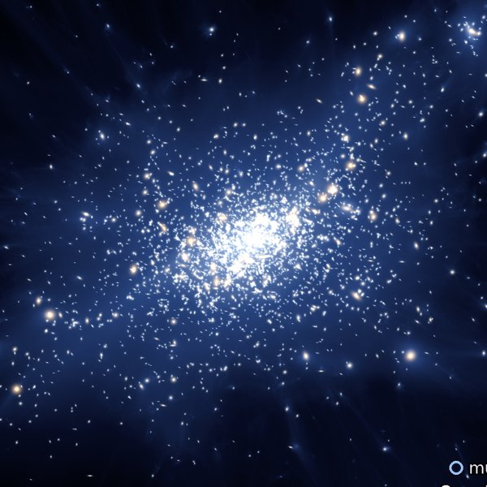
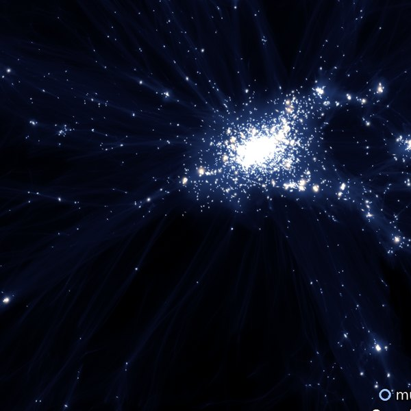
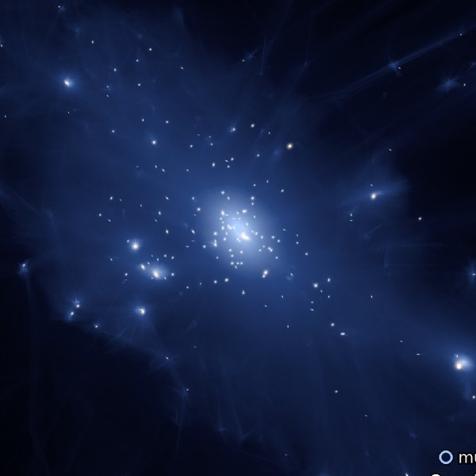

Halo Orbits
A 5 h−1Mpc window follows six massive halos; MAPs orbit inside them.
6 halos · with MAPs or dark matter only
Halo Assembly
A fixed 15 × 15 × 5 h−1Mpc box: matter and MAPs stream in from the cosmic web.
6 halos · with MAPs or dark matter only
Small Halo Orbits
Six group-scale halos with 31–149 MAPs each, so individual orbits can be followed.
6 halos · with MAPs or dark matter only